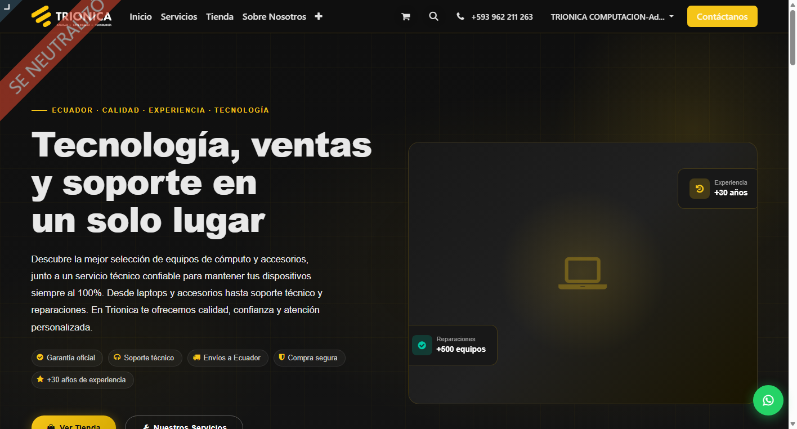
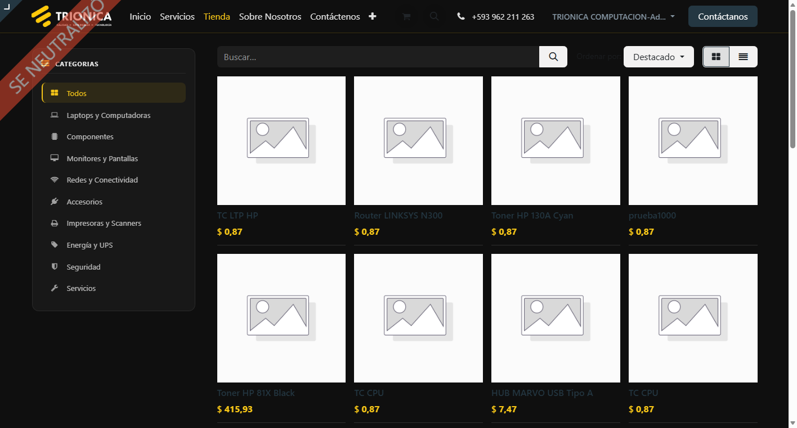

Tema moderno y profesional para el sitio web de Odoo, optimizado para empresas ecuatorianas.
Interfaz limpia y contemporánea que transmite profesionalismo a tus clientes.
Perfectamente adaptado a móviles, tablets y escritorio.
CSS y JS optimizados para máxima velocidad de carga.
CTAs estratégicamente ubicados para maximizar conversiones.
Bot integrado que publica noticias tecnológicas automáticamente.
Colores, tipografías y secciones configurables desde el editor web de Odoo.
Instala desde Odoo Apps — el tema se activa en tu sitio web automáticamente.
Ve a Sitio Web → Personalizar y ajusta los colores corporativos de tu empresa.
Usa el editor visual de Odoo para personalizar textos, imágenes y secciones.

Página de inicio del tema Trionica — diseño profesional y oscuro

Tienda online con el tema Trionica aplicado